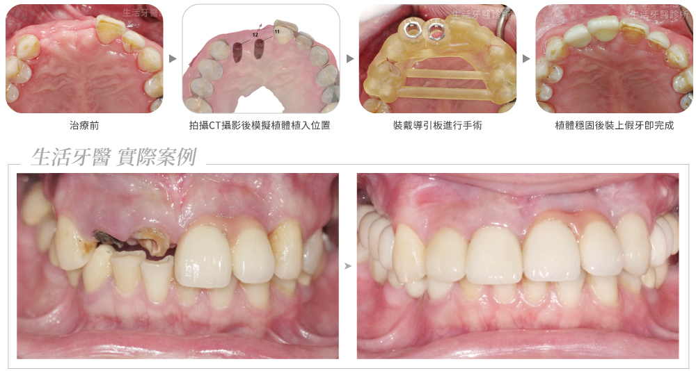
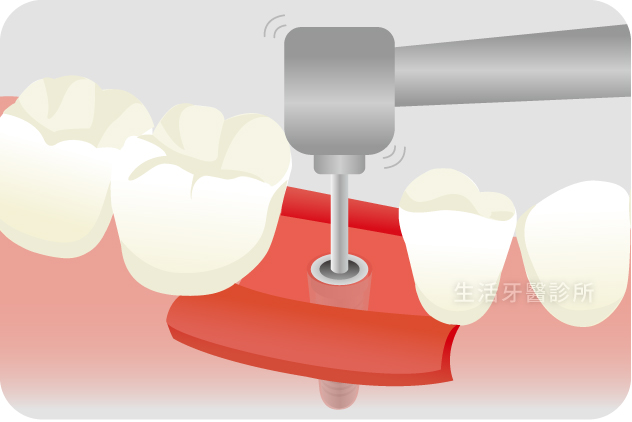
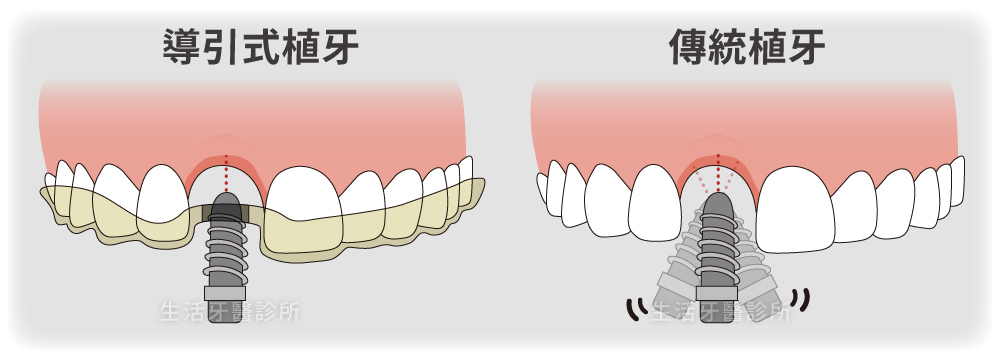
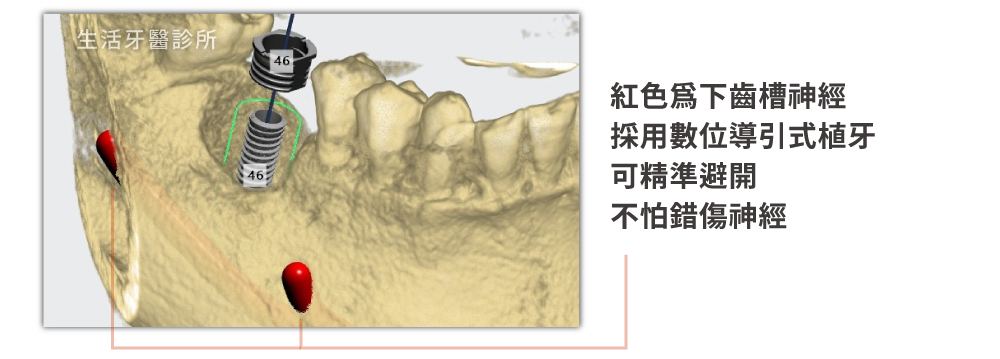
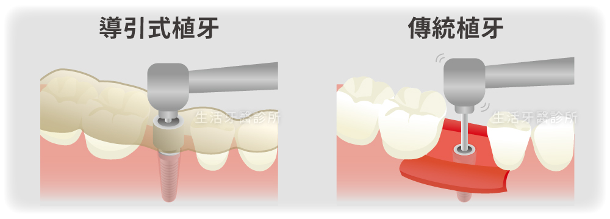
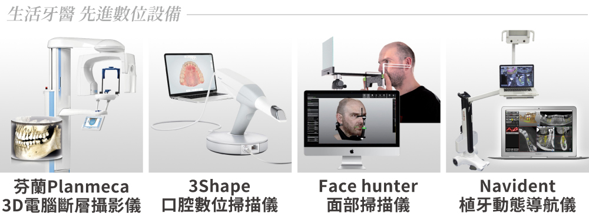
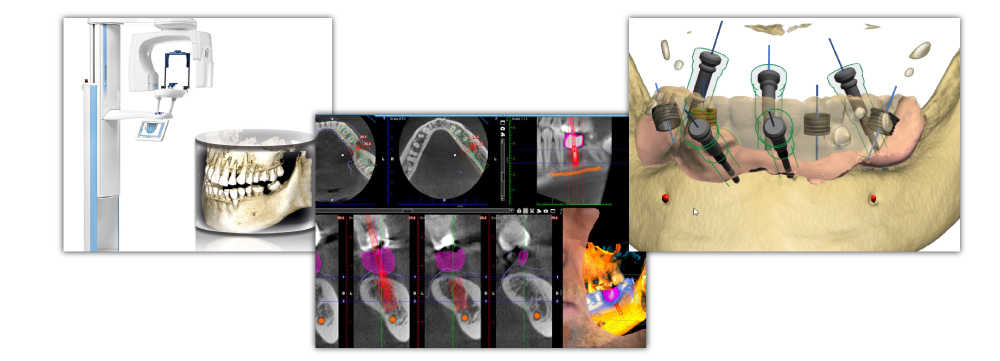
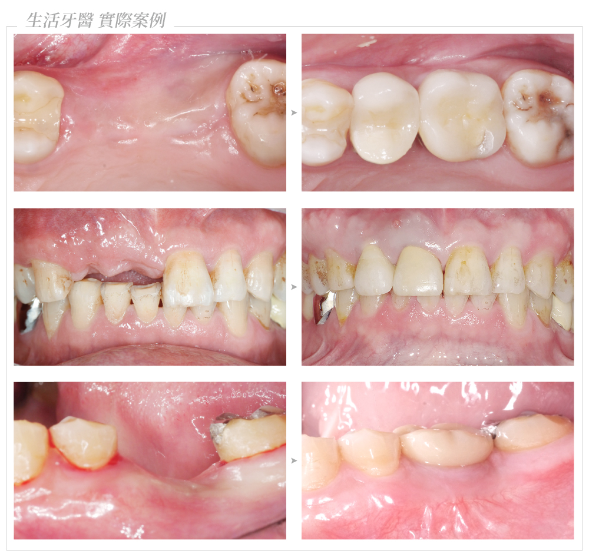

談到植牙，許多人會擔心手術時間、不適感與恢復過程。隨著數位牙科技術進步，醫師除了依臨床經驗徒手植入，也能結合電腦斷層、口腔掃描與手術導板進行導引式植牙。
兩種方式的差異不只是一片導板，而是從術前資料整合、植體位置規劃，到手術執行與假牙設計的整體流程。以下從臨床角度整理各自特色。
1. 認識導引式植牙和傳統植牙
導引式植牙
利用電腦斷層與口腔數位掃描資料，在軟體中規劃植體角度、深度與位置，再製作手術導板，協助醫師依規劃植入。
傳統徒手植牙
由醫師根據影像、口內條件與臨床經驗，在手術過程中徒手判斷植體的位置與角度，操作結果較仰賴醫師經驗。


2. 手術精準度與安全性
精準度會影響植體與神經、血管、上顎竇及鄰牙之間的安全距離。原文整理的研究資料顯示，導引式植牙的植體偏差約 0.72–0.88 mm、角度誤差約 2.5°；徒手植牙的偏差約 1.56–2.22 mm，角度誤差可能達 7° 以上。
透過術前 3D 模擬，醫師能預先檢視重要解剖構造並安排植入路徑。數位導引可增加規劃的可預測性，但仍需正確資料、嚴謹設計與醫師臨床判斷共同配合。


3. 手術時間、傷口與恢復速度
手術流程更有效率
導引式植牙在術前完成較多規劃，原文資料指出實際手術時間可能縮短約 30–50%；實際時間仍會依植牙顆數、骨況與是否需要補骨而異。
傷口與術後感受
適合的個案可透過較小範圍的手術完成植入，出血、腫脹與疼痛可能較輕；傳統方式為確認手術視野，切口範圍有時較大。
恢復速度因人而異
原文整理指出導引式手術的恢復期可能縮短約 2–3 天，但個別差異仍與身體狀況、手術範圍及術後照護密切相關。

4. 美學效果與長期穩定性
前牙植牙不只要確認骨內位置，也要兼顧未來假牙比例、牙齦支撐與笑容線條。數位流程能在術前同步模擬植體與假牙位置，有助於讓植體方向更符合後續贋復需求。
原文整理的五年資料中，導引式植牙成功率約 95–98%，傳統植牙約 90–93%。這些數字是特定文獻與條件下的統計範圍，不能視為個別患者的結果保證；骨質、牙周健康、抽菸、慢性疾病、清潔與定期追蹤都會影響長期穩定性。


5. 如何選擇植牙方式？
導引式植牙並不是用機器取代醫師，而是以數位資料放大醫師的規劃、判斷與操作能力。若術前設計不夠嚴謹，再精密的導板也只會執行原先的錯誤規劃。
簡單個案可能以傳統方式完成；面對骨量不足、重要解剖構造鄰近、前牙美學或多顆植牙時，數位導引通常能提供更多術前資訊與控制。最終仍需由醫師依電腦斷層、口內檢查、全身健康與治療需求評估。

植牙的成功不只取決於手術方式，完整診斷、醫師經驗、植體位置、假牙設計、口腔清潔與定期回診同樣重要。任何成功率與恢復期數據都需配合個人條件解讀。